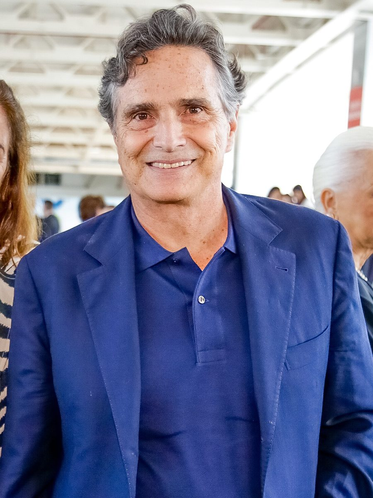
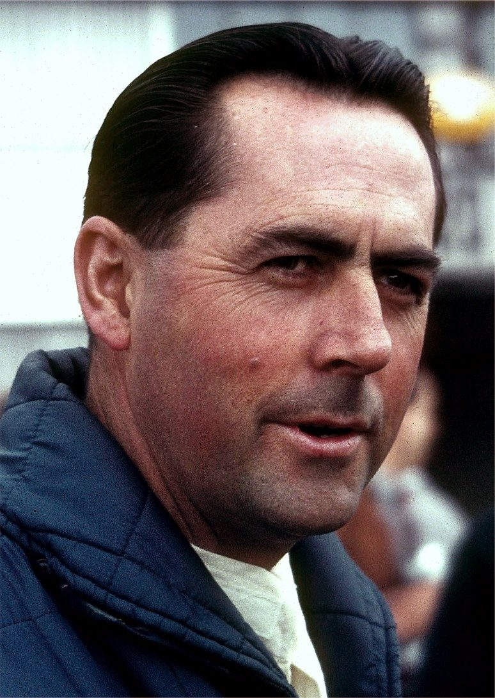

威廉姆斯车队首位世界冠军艾伦·琼斯去世，享年80岁
这位澳大利亚车手夺得1980年一级方程式世界冠军，为威廉姆斯车队赢得了首个车手总冠军。

据英国广播公司体育频道（BBC Sport）、天空体育和《卫报》本周报道，澳大利亚车手艾伦·琼斯（Alan Jones）去世，享年80岁。他曾夺得1980年一级方程式世界冠军，为威廉姆斯车队赢得首个车手总冠军。
他的妻子阿曼达·巴特勒-戴维斯通过澳大利亚赛车运动协会（Motorsport Australia）发表声明确认了这一消息，并表示“最亲近他的人会深情地怀念他”。
1980年的冠军

1975年至1986年间，琼斯共参加116场大奖赛，赢得其中12场。他的巅峰赛季是1980年。驾驶威廉姆斯FW07B赛车，他赢下五场比赛，并力压纳尔逊·皮奎特夺得总冠军。
这座冠军改变了威廉姆斯车队。在琼斯加盟之前，这支由弗兰克·威廉姆斯和帕特里克·海德创办的车队规模很小。他的冠军是车队众多冠军中的第一个，此后在这里夺冠的车手，包括纳尔逊·皮奎特、奈杰尔·曼塞尔和阿兰·普罗斯特，都走在他开辟的道路上。
琼斯是继杰克·布拉汉姆之后第二位夺得F1世界冠军的澳大利亚人，此后再无澳大利亚车手获此殊荣。
威廉姆斯之外的职业生涯

加盟威廉姆斯之前，琼斯曾效力于赫斯基斯（Hesketh）和影子（Shadow）等小车队，并于1977年代表影子车队在奥地利赢得个人首场大奖赛冠军。
1981赛季结束后，刚满35岁的他第一次从F1退役，此后几年曾短暂复出。后来，他在澳大利亚参加房车赛，并成为知名的电视评论员，以直率敢言的风格著称。
弗兰克·威廉姆斯常形容琼斯是一位强硬、毫不妥协的车手——正是车队早年所倚重的那类车手。
预计未来几天，赛车界各方将陆续发来悼念。